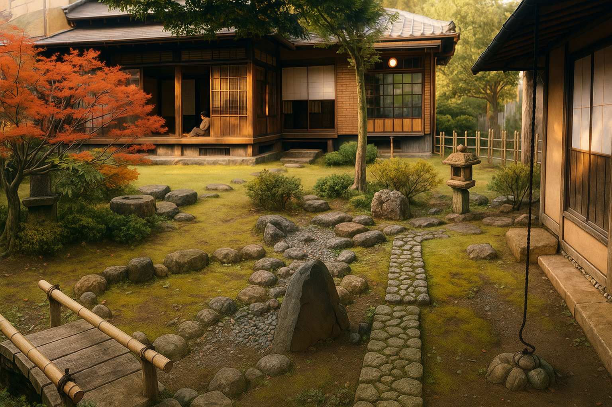
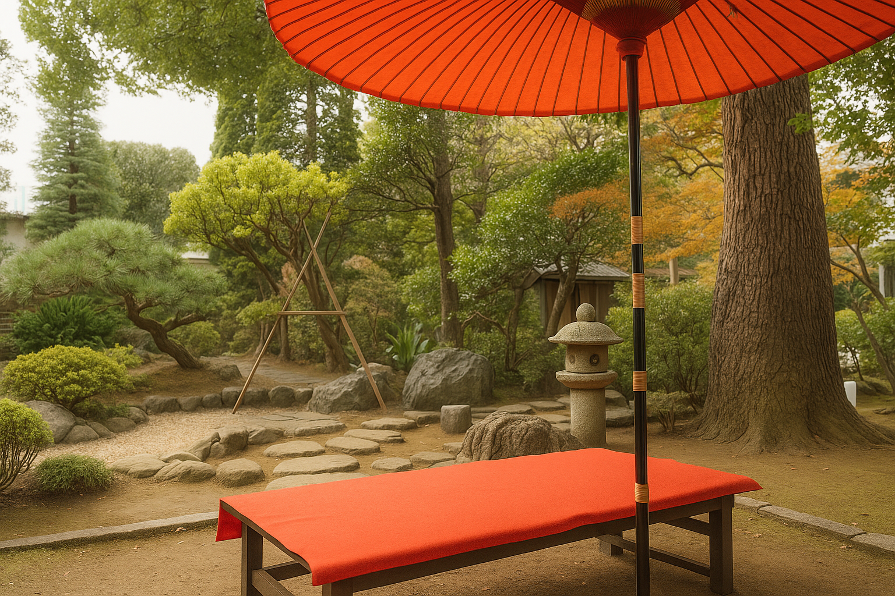

ロマンあふれる大正時代を思わせる町並み
大正浪漫通り
大正浪漫通りは、川越の歴史的な魅力が色濃く残る観光名所で、大正時代の洋風建築と伝統的な和の雰囲気が見事に調和した街並みが楽しめます。通りには蔵造りの重厚な建物や、レトロな石畳が続き、まるで時間が止まったかのような錯覚を覚えます。多くの建築物は国の登録有形文化財に指定されており、歴史的価値の高さも特徴です。散策しながら訪れるカフェやアンティークショップでは、川越独自の伝統工芸品や特産品を手に取ることができ、買い物も楽しめます。春や秋には地元の祭りが開かれ、着物を着た人々で賑わう様子はまさにタイムスリップしたかのようです。夜になるとライトアップが施され、昼間とは異なる幻想的な光景が広がり、ロマンチックな散策が可能です。写真撮影スポットも多く、観光客のみならず地元の人々にとっても愛される場所となっています。歴史、文化、食といった様々な魅力が集約された大正浪漫通りは、川越観光のハイライトと言えるでしょう。
旧山崎家別邸

旧山崎家別邸は、江戸時代に川越で名を馳せた豪商・山崎家の別荘として建てられた歴史的建築物で、書院造りの美しい和風建築の典型例です。畳敷きの和室や格子窓、繊細な欄間細工、立派な梁組みなど、職人技の結晶を感じられる建築美が随所に見られます。敷地内には日本庭園が広がり、池には錦鯉が泳ぎ、苔むした石灯籠や四季折々の花木が静寂な風景を作り出しています。館内には当時の生活用品や書簡、商売の記録などの貴重な資料が展示され、江戸時代の川越の商業や文化、地域社会の様子を深く知ることができます。季節によって特別公開や茶会が行われ、訪れる人々は日本の伝統文化に触れられます。歴史好きや建築ファンはもちろん、庭園の美しさを愛する人々にもおすすめのスポットです。静かな空間で日本の歴史と文化を体感し、心を落ち着けることができる貴重な場所となっています。
丹徳庭園

丹徳庭園は、都会の喧騒を忘れ、日本の伝統的な美意識を感じられる隠れた日本庭園です。庭園は池泉回遊式の形式を取り入れ、自然の風景を巧みに借景として取り入れています。春には満開の桜が池の水面に映り込み、訪れる人々の心を和ませます。秋には燃えるような紅葉が庭園を彩り、苔むした石灯籠や松の緑と美しいコントラストを描きます。散策路は歩きやすく整備されており、四季折々の景色をゆったり楽しむことができます。庭園内には伝統的な茶室があり、茶道の作法を学ぶ体験イベントも開催され、日本文化への理解を深める機会を提供しています。静寂に包まれた空間で、日本の自然美と文化が調和した趣深い庭園は、歴史や文化に興味がある観光客だけでなく、写真愛好家や静かな場所を求める人々にも愛されています。川越観光の中でも落ち着いたひとときを過ごせるおすすめスポットです。
川越の食べ歩きスポット